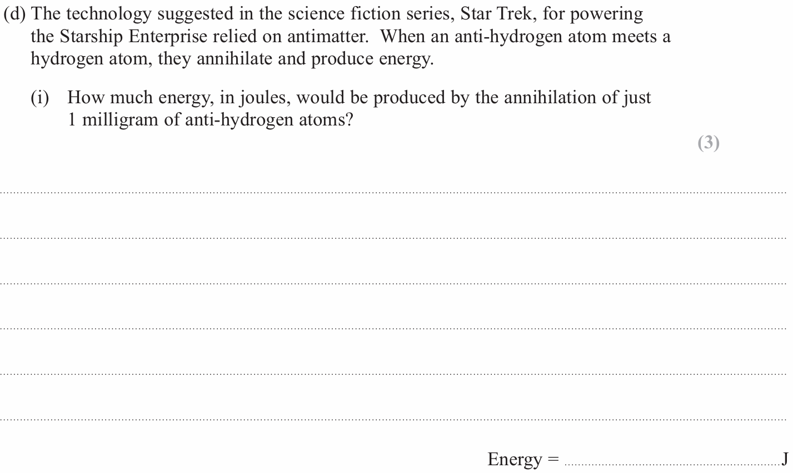

Education
From an Edexcel Physics Paper to the Holodeck of MUN
It was during my A Levels, while preparing for Edexcel Physics, that I encountered an unexpected introduction to Star Trek. I was working through past paper questions on Nuclear Physics when I came across a problem framed around the Starship Enterprise. That was my first exposure to the franchise, and it immediately stood out to me.
As I explored the series further, my interest gradually narrowed to the concept of the Holodeck. I began to wonder whether anything resembling such a system existed in reality, even as part of emerging technologies. This curiosity led me to the Wikipedia page on holographic displays. As I read through it, I became increasingly convinced that such technologies could have meaningful use cases, particularly in the context of defence applications. Surprisingly, however, there was no explicit mention of the military or defence sector anywhere on the page.

There was, however, one name that caught my attention: DARPA. I recognised the acronym only because I had once skimmed through a Biology A Level Unit 5 past paper while deciding whether to take Biology. That paper mentioned DARPA in the context of research into creating "a fourth group" of food, in addition to proteins, carbohydrates, and fats. I ultimately did not take Biology — largely because the DARPA article was the only part of the paper I found interesting — but it left a lasting impression. From that article, I learned that DARPA stands for the U.S. Defense Advanced Research Projects Agency.
This discovery reinforced my intuition that holographic display systems could have non-obvious defence applications. Wanting to learn more, I followed the reference links and found that, at the time, the available information was limited to a brief mention of DARPA sponsoring early research into battlespace visualisation around 2011. In those days, Wikipedia was effectively my most reliable source of information. If I could not find further details there, I was unsure where else to look.
A general Google search felt unreliable; terms such as holography often attract speculative or fictional material presented as fact. To avoid this, I turned instead to Google Scholar and searched for something along the lines of Holographic Displays: Defence Applications. Through this, I came across a paper by Matthew Hamilton et al. Matthew Hamilton is a professor at the Memorial University of Newfoundland (MUN).
I will not claim to have understood everything in that paper. However, it referenced concepts and names I was already familiar with — Star Trek, DARPA, and movies such as Pushing Tin. Because of that familiarity, I understood more than I had expected to, especially given that I was not accustomed to reading academic papers at the time.
From there, I decided that I wanted to get to Memorial University of Newfoundland someday, with the aim of meeting the author and, if possible, discussing this area of research with him. In 2021, I was admitted to Memorial University of Newfoundland. While that goal has since been achieved, the curiosity that led me there — particularly around emerging technologies and their use cases in defence applications — remains relevant to how I think about science and technology.


 arnobg2002@gmail.com
arnobg2002@gmail.com
 LinkedIn
LinkedIn